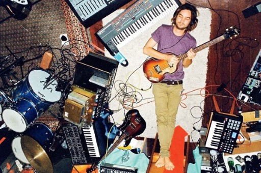

Lonerism Review
Welcome to the critique of Lonerism, Tame Impala's groundbreaking 2012 album.

“It’s all about the loneliness, but also the freedom.”
One of the standout tracks, "Elephant" , brings a heavier, fuzz-driven sound.